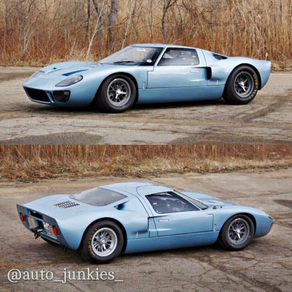

Media
- Tweets
- Tweets & replies
- Media
@auto_junkies_ is blocked
Are you sure you want to view these Tweets? Viewing Tweets won't unblock @auto_junkies_.
-
That Blue Lambo tho!
#Lamborghini#aventador#lambo#blue#badass#wow#autojunkies#carspic.twitter.com/dwXHW2xkH9 -
Monster Merc! Damn.
#monster#MercedesBenz#wow#massivepic.twitter.com/fZXkYydwP2 -
That Drift tho! Aston Martin Vantage GT12.
#AstonMartin#vantage#drift#power#badass#autojunkies#likepic.twitter.com/SIGAq6C4vg -
The McLaren trio. Which would you choose?
#mclaren#mclarenP1#mclaren675LT#mclaren570S#speed#power#badass#Wowpic.twitter.com/6RmmaLiQrg -
The Bentley Continental GT Speed! Luxury and power in harmony.
#Bentley#ContinentalGT#luxury#power#Speedpic.twitter.com/I9AxQ63A1G -
The Lamborghini Aventador SV!
#Lamborghini#aventador#monster#speed#wow#beauty#like#retweet#autojunkiespic.twitter.com/oSGm3pKKnq -
The Porsche 911 GT3 with an old school livery!
#Porsche911#badass#oldschool#sick#cars#like#retweetpic.twitter.com/9fECKdY9n8 -
2017 Nissan GTR now with more Power!!
#Nissan#gtr#power#cars#like#retweet#autojunkiespic.twitter.com/7pGkskMc3w -
Mk3, Mk4 and Mk5? Big Supra family.
#Toyota#supra#suprarocks#2JZ#JDM#Cars#like#retweetpic.twitter.com/uOCK2ErCCv
-
The drop dead gorgeous Rolls Royce Dawn.
#RollsRoyce#Dawn#convertible#luxury#beauty#elegantpic.twitter.com/ffKmK5L38W -
Can't get more badass than the Mustang Rocket by Henrik Fisker
#mustang#fisker#badass#autojunkies#sexy#Fordpic.twitter.com/iO1FNYPXAh -
-
Civic Type R. Badass FWD hot hatch!
#Honda#TypeR#vtech#oneofakind#truehothatchpic.twitter.com/emM5V0WkVm
-
Aston Martin and Red Bull teaming up to make a hyper car seems like a good idea.
#astonmartin#redbull#l4l#reweetpic.twitter.com/kLz23SjvWu -
The long awaited Honda NSX!
#Honda#NSX#finally#stormtrooper#l4l#retweetpic.twitter.com/P4oNKETj2K -
McLaren 570s GT4 racer.
#mclaren#570s#racer#beast#autojunkies#l4l#retweetpic.twitter.com/pT1XnFXdKa -
-
BMW concept car is sick!

#BMW#concept#gold#changethegame#Wow.pic.twitter.com/bFoCpO1oj6 -
Red Hot Regera!!

 .
. #regera#speedster#hyper#slick#like#retweetpic.twitter.com/MiOx7RwayJ
-
AMG GT by Mansory!
#Mercedes#AMG#GT#power#mean#autojunkiespic.twitter.com/ak5nxwR2MG
-
S63 AMG by Mansory!
#Mercedes#S63#AMG#mean#attitude#Power#custom#carbonfibrepic.twitter.com/SEg76T0vlL -
Rolls Royce Wraith "Palm 999" edition by Mansory.
#RollsRoyce#luxury#beauty#gold#goalspic.twitter.com/ieYv9DVg7s -
Follow us on Instagram. We post great content. Just search for
@auto_junkies_ or click on the link in our bio!pic.twitter.com/O7Qmo9PECS -
Mean looking Ferrari 488 by Mansory!
#Ferrari #488#carbonfibre#Slick#Mean#attitude#autojunkies#l4l#retweetpic.twitter.com/I7M8gHXEir -
Porche 911 GT3 4S by Techart.
#porche#porche911#GT3#modified#autojunkies#l4l#retweet#followpic.twitter.com/HpRB1h8O1m -
The McLaren 675 LT Spyder.
#McLaren #675#LT#convertible#speed#autojunkies#like#followpic.twitter.com/7QLP1yOZPx -
Brabus C63 AMG! Boss mode activated.
#power#merc#C63#Brabus#boss#beast#autojunkies#cars#l4l#follow4followpic.twitter.com/ExHf1Qyv9e -
The original Ford GT40.
#classic#sexy#ford#GT40#follow4follow#l4lpic.twitter.com/YUTJzEX1T5 -
Mean looking Shelby GT 350!
#mean#whiteandblue#bluestripes#cars#MuscleCars#autojunkies#l4l#retweet#followpic.twitter.com/FZqWM3aDjs -
-
The 2016 mansory lamborghini huracan
#allcarbon#Lamborghini#mansory#black#mean#beastpic.twitter.com/Fa7aOFKZle